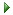

フィルターの種類には下記のようなものがあります。
選択フィルターは選択しているフィールドの中で、選択中セルまたは文字列が含まれるレコードを表示します。
もっとも頻繁に使用するフィルターで、何回も重ねて指定することが可能です。重ねて指定することによりレコードが絞られていきます。
セルを選択した状態で選択フィルターを実行するとそのセルの値と同じ値を持つレコードのみがすべて表示され、セル内の文字列を選択 した状態で選択フィルターを実行するとその文字列を含む値を持つレコードがすべて表示されます。
非選択フィルターは選択フィルターの逆となり、選択中のセルの値または文字列を含まないレコードのみが表示されます。
フィルターの編集では現在までに実行しているフィルターを編集することができます。
リストよりフィールド名と条件、値を入力することにより選択フィルターでは実現できない｢以上/以下」や「超える/未満」といったフィルターを実行することが可能です。
編集したフィルターを反映するにはをクリックしてください。
最後に実行されたフィルターを取り消すには「フィルターを一つ戻る」を実行します。
すべてのフィルターを解除する場合は「選択フィルターの解除」実行してください。
フィルターなしでテーブルを表示します。
Copyright(C) 2008-2013 Pup All Rights Reserved.